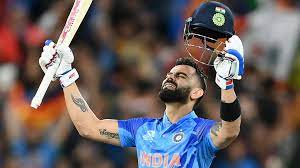

Virat Kohli
The Run Machine
About King Kohli
In 2013, Kohli was ranked number one in the ICC rankings for ODI batsmen.
In 2018, he was
ranked top Test batsman,
making him the only Indian cricketer to hold the number one spot in all three formats of the game.
He is the first player to score 20,000 runs in a decade.
He has received many accolades for his performances on the cricket field.
He was recognized as the ICC ODI Player of the Year in 2012 and has won the Sir Garfield
Sobers Trophy,
given to the ICC Cricketer of the Year, on two occasions, in 2017 and 2018 respectively.